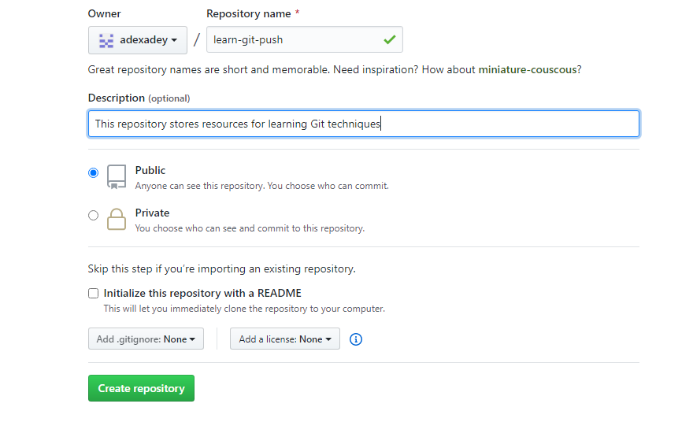

According to Wikipedia,Git (/ɡɪt/) is a distributed version-control system for tracking changes in source code during software development. It is designed for coordinating work among programmers, but it can be used to track changes in any set of files.
Today, I would like to share an essential command for developers to push their code to from their local machine. First of all, see below what is covered in this tutorial.
Table of Content
What is a repository
How to create a repository on Github
Running the git push command in terminal
Conclusion
What is a Repository
A repository is basically the directory where we initialize the Git to track the project on our local machine. Now because git is a collaborative tool, there is need to have a remote repository. That can be done with GitHub though there are other ones like GitLab and GitBucket.
How to create a repository on Github
To create a remote repo, you need to register a GitHub account from https://github.com/ then you click on the + (plus) sign at the top right of the page. click on ‘New Repository’ then fill the form and click on the ‘Create repository’ button.

Fig 1 | Create a repo page
On the next screen, you will get something like this:
Fig 2 | HTTPS Link
Take note of the https link because you will need it to run the following command in the terminal.
Running the git commands in terminal
Now go to the terminal and run the two commands below (please note that the link is unique for every GitHub repository).
You will have to enter username and password. This a way Git authenticates to confirm you have access to the github repo specified in the command.
Fig 4 | gitpush command
The -u in the command is called flag and it is essential so that you can just use git push for subsequent push without having to use git push origin master
Conclusion
Now, your code already hosted and can be accessed from the GitHub link.